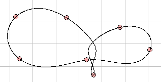

An unusual 7-body orbit for gravitationally interacting particles.
N-Body solves the gravitation n-body problem for gravitationally interacting particles. The solution of this problem has inspired and challenged physicists and mathematicians for centuries and few solutions for N>2 are known. The three-body orbit shown in this model was discovered by Moore in 1993 and proved to be stable by Chenciner and Montgomery in 2000. Other unusual N-body orbits have since been found although all orbits with N> 3 are unstable (and chaotic) and sooner or later the trajectories will fly diverge and the choreography will break.
The
initial-condition data for N>4 has been kindly provided by Carles Simó, UAB, Spain.
The N-Body Orbits model is designed to teach Ejs modeling. Right click within the simulation to examine this model in the Ejs modeling and authoring tool. See:
The Easy Java Simulations (EJS) documentation can be downloaded from the ComPADRE Open Source Physics collection and from the Ejs website.
This simulation was created by Wolfgang Christian using the Easy Java Simulations (Ejs) modeling tool. You can examine and modify this simulation if you have Ejs installed by right-clicking within a plot and selecting "Open Ejs Model" from the pop-up menu. Information about Ejs is available at: <http://www.um.es/fem/Ejs/>.